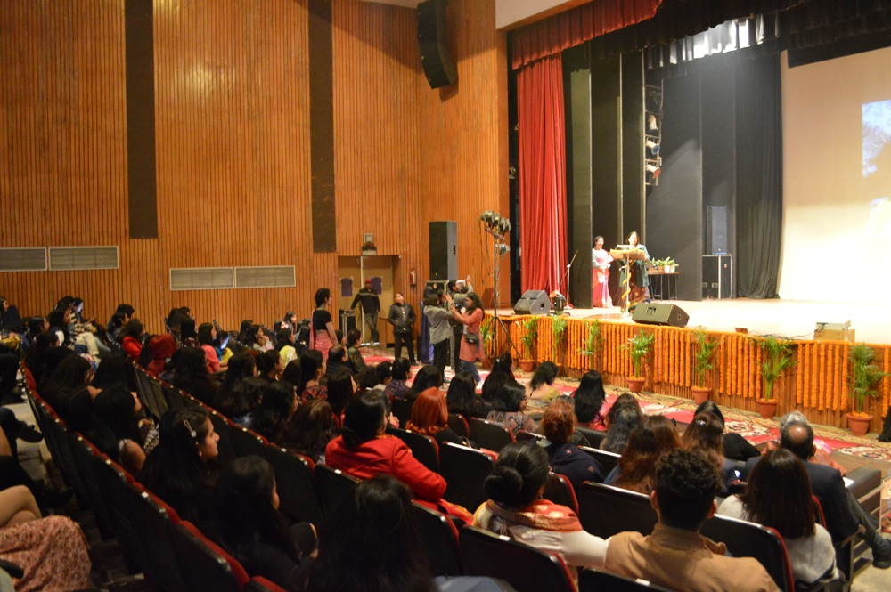

The Auditorium at the University College of Engineering is a central venue designed to host a wide variety of academic and extracurricular events.
With a spacious seating arrangement, it accommodates a large audience, making it an ideal space for seminars, conferences, guest lectures, cultural
programs, and student gatherings.
Equipped with modern audiovisual technology, including high-quality projectors, sound systems, and lighting, the auditorium ensures that presentations and
performances are clearly visible and audible from any seat. This technology enables an immersive experience, whether it's for a technical presentation, a
motivational talk, or an awards ceremony. The well-designed stage is versatile, adaptable to different setups based on the nature of the event, from formal
ceremonies to interactive workshops.
The auditorium is also a key space for students to showcase their talents and practice public speaking, as it frequently hosts cultural and student-organized events.
It's a place where students can connect with industry experts, participate in discussions, and engage with ideas beyond the classroom. To ensure smooth operations, the
auditorium has a dedicated support team responsible for setting up events and assisting with technical requirements.

